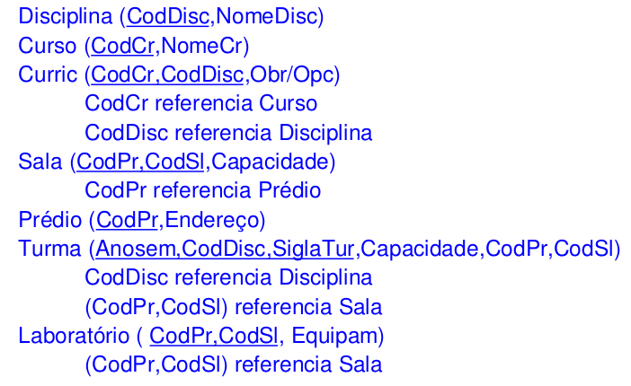
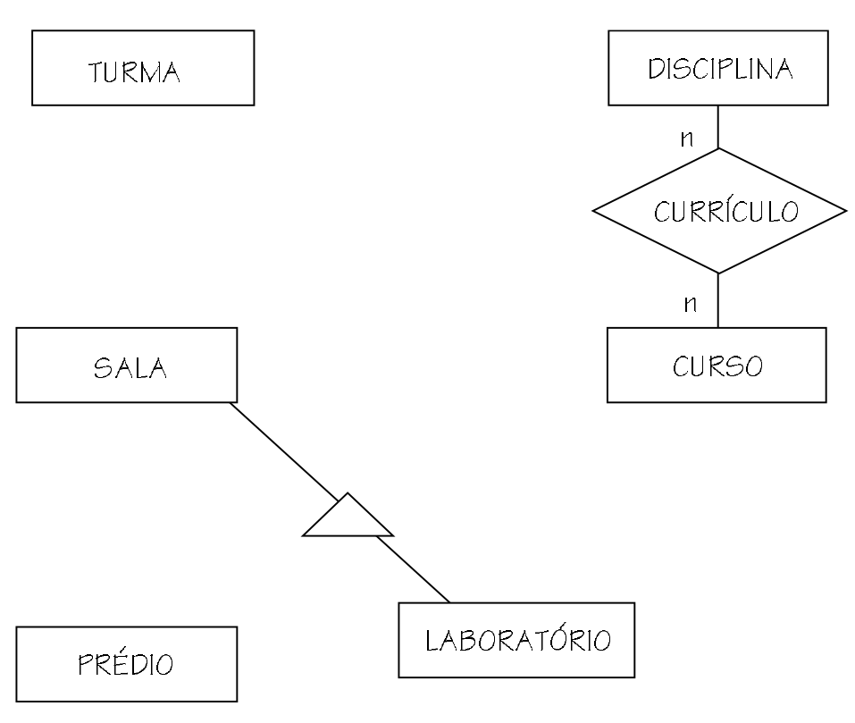
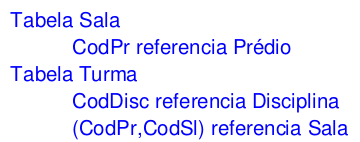
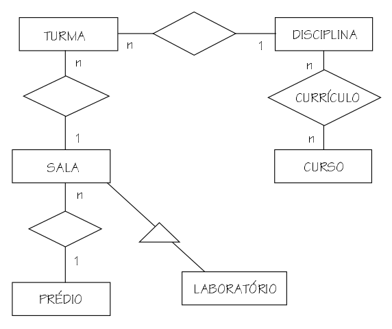
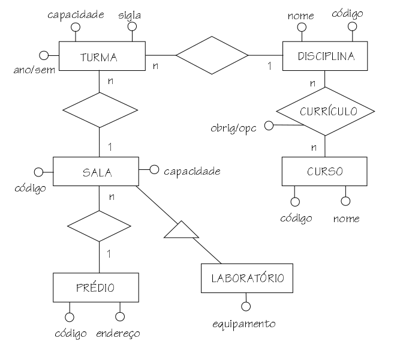
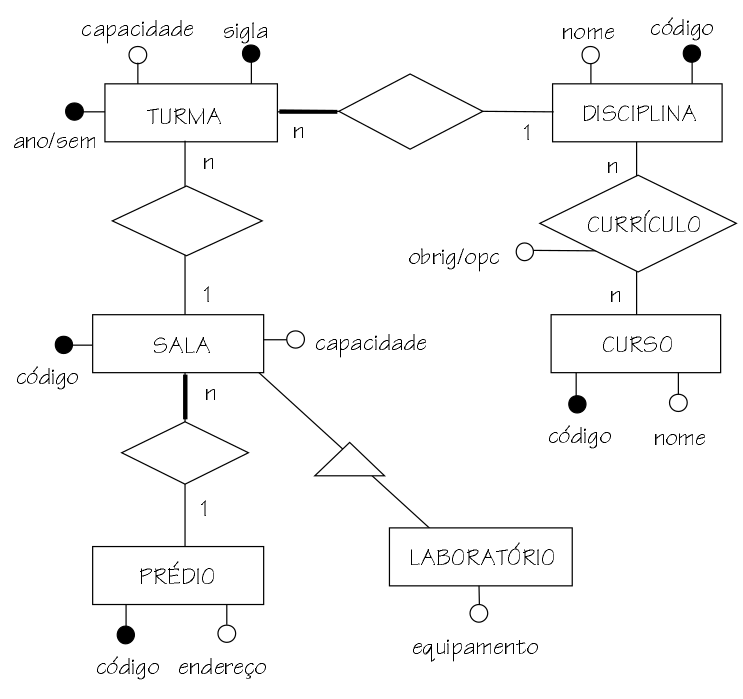
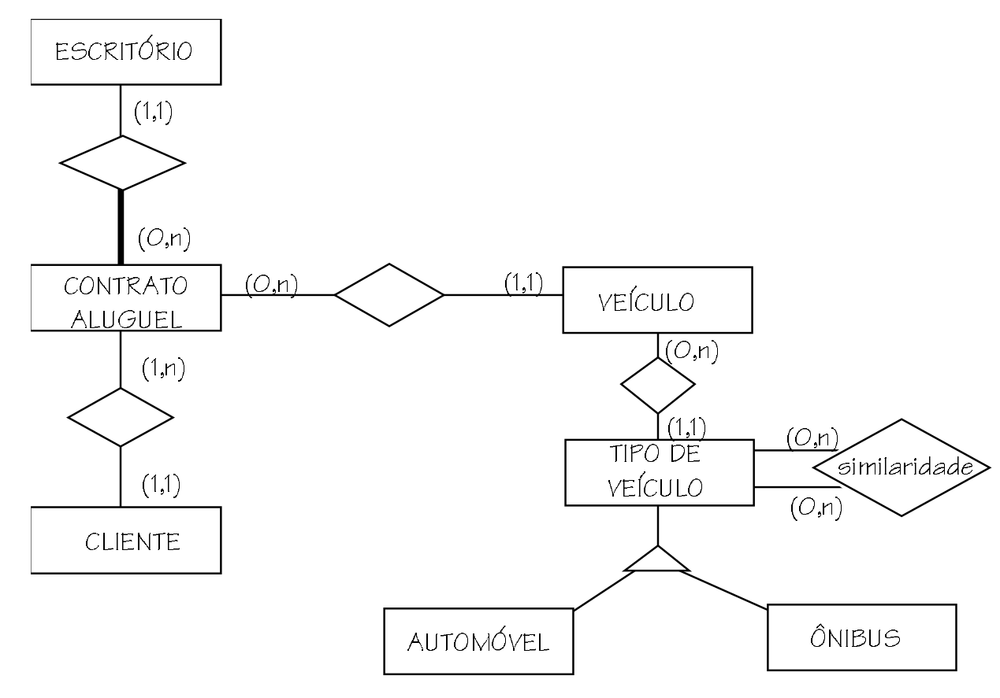
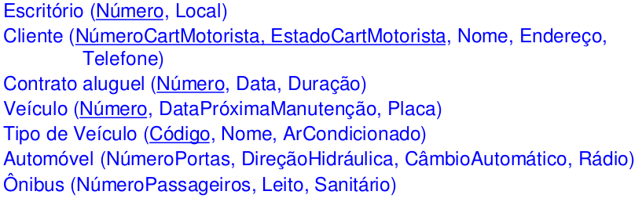

Engenharia reversa
-
ER → MR: visto em aulas passadas;
-
MR → ER: engenharia reversa.
A engenharia reversa de modelos relacionais pode ser útil quando não se tem um modelo conceitual para um banco de dados existente. Isso pode acontecer quando o banco de dados foi desenvolvida de forma empírica, sem o uso de uma metodologia de desenvolvimento, ou quando o esquema do banco de dados sofreu modificações ao longo do tempo, sem que as mesmas tenham sido registradas no modelo conceitual.
- Identificação da construção ER correspondente a cada tabela;
- Definição de relacionamentos 1:n e 1:1;
- Definição de atributos;
- Definição de identificadores de entidades e relacionamentos.

Identificação da construção ER correspondente a cada tabela
Uma tabela pode corresponder a:
- Uma entidade;
- Um relacionamento n:n;
- Uma entidade especializada.
Regra 1: chave primária composta por mais de uma chave estrangeira
A tabela que possui uma chave primária composta de múltiplas chaves estrangeiras implementa um relacionamento n:n entre as entidades correspondentes às tabelas referenciadas pelas chaves estrangeiras. Um exemplo de tabela deste tipo é a tabela Curric que tem como chave primária CodCr e CodDisc. Ambas colunas são chave estrangeira em relação às tabelas Curso e Disciplina respectivamente. Portanto, a tabela Curric representa um relacionamento entre as entidades correspondentes às tabelas CodCr e CodDisc. No exemplo, a única tabela deste tipo é a tabela Curric.
Regra 2: Toda chave primária é uma chave estrangeira
Regra 2: Toda chave primária é uma chave estrangeira A tabela cuja chave primária é toda ela uma chave estrangeira representa uma entidade que forma uma especialização da entidade correspondente à tabela referenciada pela chave estrangeira. Um exemplo de tabela deste tipo é a tabela Laboratório que possui como chave primária as colunas (CodPr,CodSl), as quais são chave estrangeira da tabela de salas. A restrição de integridade referencial em questão especifica que uma linha na tabela de laboratórios somente existe, quando uma linha com a mesma chave existir na tabela de salas. A nível de modelo ER, isso significa que uma ocorrência da entidade laboratório somente pode existir quando a correspondente ocorrência da entidade sala existe, ou seja, significa que a entidade laboratório é uma especialização de sala. No exemplo, a única tabela deste tipo é a tabela Laboratório.
Regra 3: Demais casos
Quando a chave primária da tabela não for composta de múltiplas chaves primárias (regra 1 acima), nem for toda uma chave estrangeira (regra 2 acima), a tabela representa uma entidade. Exemplificando, a tabela Curso, cuja chave primária, a coluna CodCr não contém chaves estrangeiras, representa uma entidade. Da mesma forma, a tabela Sala também representa uma entidade. Sua chave primária (colunas CodPr e CodSl) contém apenas uma chave estrangeira (coluna CodSl). Assim, não obedece ao requisito da multiplicidade de chaves estrangeiras (regra 1), nem o requisito de toda chave primária ser estrangeira (regra 2) e enquadra-se na presente regra. O mesmo é válido para as tabelas Disciplina, Prédio e Turma.

Definição de relacionamentos 1:n e 1:1
Toda chave estrangeira que não se enquadra nas regras 1 e 2 acima, ou seja, toda chave estrangeira que não faz parte de uma chave primária composta por múltiplas chaves estrangeiras, nem é toda ela uma chave primária, representa um relacionamento 1:n ou 1:1. Em outros termos, toda chave estrangeira que não corresponde a um relacionamento n:n, nem a uma entidade especializada representa um relacionamento 1:n ou 1:1. A regra não permite definir se a cardinalidade do relacionamento é 1:n ou 1:1. Para definir qual dos dois tipos de relacionamentos está sendo representado pela chave estrangeira, é necessário verificar os possíveis conteúdos do banco de dados. No caso do exemplo, as chaves estrangeiras que representam relacionamentos 1:n ou 1:1 são as seguintes:


Definição de atributos
Nesta etapa, para cada coluna de uma tabela, que não seja chave estrangeira, é definido um atributo na entidade/relacionamento correspondente à tabela. Observe-se que colunas chave estrangeira não correspondem a atributos no diagrama ER, mas sim a relacionamentos, e por isso já foram tratadas nas etapas anteriores.

Definição de identificadores de entidades e relacionamentos
No último passo da engenharia reversa, são definidos os identificadores das entidades e dos relacionamentos. A regra para definição dos identificadores é a seguinte:
Coluna da chave primária que não é chave estrangeira
Toda coluna que faz parte da chave primária e que não é chave estran- geira corresponde a um atributo identificador da entidade ou relaciona- mento.
Coluna da chave primária que é chave estrangeira
Coluna da chave primária que é chave estrangeira Toda coluna que faz parte da chave primária e que é chave estrangeira corresponde a um identificador externo da entidade. Exemplificando, a coluna CodDisc, que é parte da chave primária da tabela Turma é tam-bém chave estrangeira em relação a tabela Disciplina. Portanto, a entidade TURMA é identificada também pelo relacionamento com DISCIPLINA.

Exercício

